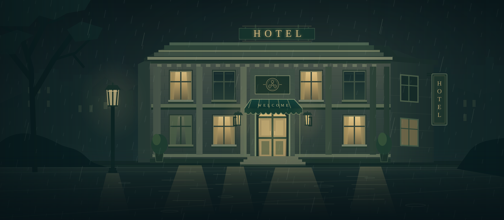

游戏
侦探档案 / 001
A SMALL MYSTERY FOR A LONG NIGHT
雨夜最后一卷
雨把所有人留在旅馆。有人，却让故事的结尾消失了。

雾灯旅馆 / 最后一次放映
今晚，缺了一个结尾。
搜查四处现场，与四位当事人交谈。把证据连起来，再给出你的答案。不拼手速，也不需要专业知识。
进度只保存在当前浏览器，不需要登录。
A SMALL MYSTERY FOR A LONG NIGHT
雨把所有人留在旅馆。有人，却让故事的结尾消失了。

雾灯旅馆 / 最后一次放映
搜查四处现场，与四位当事人交谈。把证据连起来，再给出你的答案。不拼手速，也不需要专业知识。
进度只保存在当前浏览器，不需要登录。